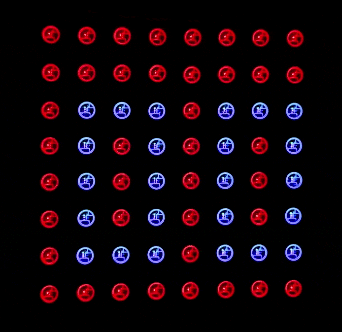
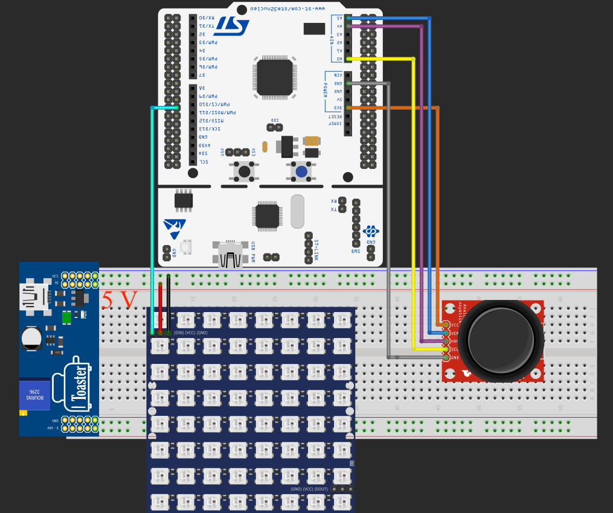

Loading...
Searching...
No Matches
SNAKE_STM32F3
Simple snake game using STM32 and a WS2812B LED matrix display.
Table of Contents
- FeaturesFeatures
- HardwareHardware
- FirmwareFirmware
Project presentationProject presentation
- Project setupProject setup
- InstallationInstallation
- Hardware connectionsHardware connections
- UsageUsage
Features
- Classic Snake game logic implementing typical mechanics such as:
- Synchronized snake movement;
- Random fruit placement;
- Growth after fruit consumption;
- Game over when the snake hits a wall or its own tail.
- Game API features such as:
- Score display after game;
- Game start from button;
- Current game state display.
Hardware
The project uses popular STM32 NUCLEO-F303RE development board but can be applied to any compatible F3 MCU. Other parts needed for implementation are:
- WS2812B matrix display (project uses 8x8 matrix but dimensions can be tuned to preference);
- Two dimensional joystick module;
- Breadboard;
- Jumper cables.
Firmware
The firmware is developed in C using STM32CubeIDE. The project is structured into several modules:
- game module - handles the main API state machine and enabling for game dimensions and colors configuration;
- snake module - handles the internal game logic state machine;
- WS2812B modules - controls the LED matrix display and allows configuration of size and brightness;
- joystick module - handles joystick input and movement interpretation.
Project presentation
Gameplay:


Assembled Hardware:


Project setup
Installation
- Download project
- Open SNAKE.ioc file in CubeMX
- Click “Generate Code” to generate all required drivers
- Import project into CubeIDE and build
Hardware connections


Usage
Upon successful flashing, you should see the display turning red. After whole display is filled click the joystick button and the game will start. Enjoy!